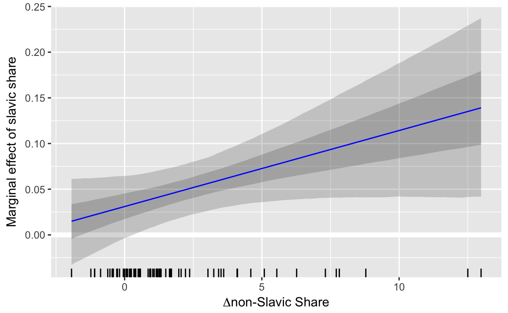

4 Posterior Inference
4.1 Prerequisites
The haven package is used to read Stata .dta files.
library("rubbish")
library("haven")4.2 Introduction
The posterior distribution is the probability distribution \(\Pr(\theta | y)\).
One we have the posterior distribution, or more often a sample from the posterior distribution, it is relatively easy to perform inference on any function of the posterior.
Common statistics used to summarize the posterior distribution:
- mean: \(\E(p(\theta | y)) \approx \frac{1}{S} \sum_{i = 1}^S \theta^{(s)}\)
- median: \(\median(p(\theta | y)) \approx \median \theta^{(s)}\)
- quantiles: 2.5%, 5%, 25%, 50%, 75%, 95%, 97.5%
credible interval:
- central credible interval: the interval between the p/2% and 1 - p/2% quantiles
- highest posterior density interval: the narrowest interval containing p% of distribution
marginal densities
4.3 Functions of the Posterior Distribution
It is also easy to conduct inference on functions of the posterior distribution.
Suppose \(\theta^{(1)}, \dots, \theta^{(S)}\) are a sample from \(p(\theta | y)\), the \(f(\theta^{(1)}), \dots, f(\theta^{(S)})\) are a sample from \(p(f(\theta) | y)\).
This is not easy for methods like MLE that produce point estimates:
- Even in OLS, non-linear functions coefficients generally require either the Delta method or bootstrapping to calculate confidence intervals.
- Berry, Golder, and Milton (2012), Golder (2017),Brambor, Clark, and Golder (2006) discuss calculating confidence intervals
- See Rainey (2016b) on “transformation induced bias”
- See Carpenter (2016) on how reparameterization affects point estimates; this is a Stan Case study with working code
4.4 Marginal Effects
4.4.1 Example: Marginal Effect Plot for X
Berry, Golder, and Milton (2012) replicates Alexseev (2006) as an example of a model with an interaction between \(X\) and \(Z\). \[ Y = \beta_0 + \beta_x X + \beta_z Z + \beta_{xz} X Z + \epsilon \] In this case, the hypothesis of interest involves the marginal effect of \(X\) on \(Y\), \[ \frac{\partial \E(Y|.)}{\partial X} = \beta_z + \beta_{xz} Z \] Since there is an interaction, the marginal effect of \(X\) is not simply the coefficient \(\beta_z\), but is a function of another predictor, \(Z\). Point estimates of the marginal effects with interactions are relatively easy to construct, but confidence intervals for the MLE estimates quickly involve multiple terms and either the Delta method approximation or bootstrapping to calculate.
We will consider this problem from a Bayesian estimation perspective, and calculate point estimates (posterior mean) and credible intervals of the marginal effects.
The particular example is Alexseev (2006), which analyzes how changes in the ethnic composition of Russian regions affected the vote share of the extreme Russian nationalist Zhirinovsky Bloc in 2003 Russian State Duma elections.[^alexseev1]
alexseev <- read_dta("data/alexseev.dta")[alexseev1]: Some of the replication code and material can be found on Matt Golder’s website.
One claim of Alexseev (2006) was that support for anti-immigrant parties depends on the percentage of the population of the dominant ethnic group (Slavic) and the change in the percentage the non-dominant share. To test that hypothesis, Alexseev (2006) estimates the following model, \[ \begin{multline} \mathtt{xenovote}_i = \beta_0 + \beta_s \mathtt{slavicshare}_i + \beta_{n} \mathtt{changenonslav} + \\ \beta_{sn} (\mathtt{slavicshare}_i \times \mathtt{changenonslav}_i) + \gamma z_{i} + \epsilon_{i}, \end{multline} \] where \(z_i\) is a vector of control variables.
xenovote: Xenophobic voting. Share of vote for the Zhironovsky Bloc.slavicshare: Slavic Share. Proportion Slavic in the district.changenonslav: \(\Delta\) non-Slavic Share Change in the proprotion of non-Slavic groups in the region.
The model was estimated by OLS,2
mod_f <- (xenovote ~ slavicshare * changenonslav + inc9903 + eduhi02 + unemp02 +
apt9200 + vsall03 + brdcont)
lm(mod_f, data = alexseev)
#>
#> Call:
#> lm(formula = mod_f, data = alexseev)
#>
#> Coefficients:
#> (Intercept) slavicshare
#> 8.942878 0.031486
#> changenonslav inc9903
#> -0.851108 0.000234
#> eduhi02 unemp02
#> -0.039512 1.432013
#> apt9200 vsall03
#> 0.030125 0.661163
#> brdcont slavicshare:changenonslav
#> 2.103688 0.008226Use the lm_preprocess function in the rubbish package to turn the model formula into a list with relevant data.
mod_data <- lm_preprocess(mod_f, data = alexseev)[c("X", "y")]
mod_data <- within(mod_data, {
n <- nrow(X)
k <- ncol(X)
M <- 100
changenonslav <- seq(min(X[ , "changenonslav"]), max(X[ , "changenonslav"]),
length.out = M)
idx_b_slavicshare <- which(colnames(X) == "slavicshare")
idx_b_slavicshare_changenonslav <-
which(colnames(X) == "slavicshare:changenonslav")
b_loc <- 0
# data appropriate prior
b_scale <- max(apply(X, 2, sd)) * 3
sigma_scale <- sd(y)
})mod
data {
// number of observations
int n;
// response vector
vector[n] y;
// number of columns in the design matrix X
int k;
// design matrix X
matrix [n, k] X;
// marfx
// indexes of main and interaction coef
int idx_b_slavicshare;
int idx_b_slavicshare_changenonslav;
int M;
vector[M] changenonslav;
// beta prior
real b_loc;
real b_scale;
// sigma prior
real sigma_scale;
}
parameters {
// regression coefficient vector
vector[k] b;
// scale of the regression errors
real sigma;
}
transformed parameters {
// mu is the observation fitted/predicted value
// also called yhat
vector[n] mu;
mu = X * b;
}
model {
// priors
b ~ normal(b_loc, b_scale);
sigma ~ cauchy(0, sigma_scale);
// likelihood
y ~ normal(mu, sigma);
}
generated quantities {
# hardcoded marginal effectx
vector[M] dydx;
dydx = b[idx_b_slavicshare] + b[idx_b_slavicshare_changenonslav] * changenonslav;
}
The function rstan extracts parameters from the rstan object as a list with an element for each parameter.
dydx_all <-
rstan::extract(mod_fit, pars = "dydx")$dydxTo make it easier to use with ggplot, convert it to a data frame with columns .id (number), changeonslav (original value of changeonslav passed to the sampler), and value (the value of the marginal effect).
dydx_all <-
dydx_all %>%
as.tibble() %>%
mutate(.iter = row_number()) %>%
gather(.id, value, -.iter) %>%
# merge with original values of changenonslav
left_join(tibble(.id = paste0("V", seq_along(mod_data$changenonslav)),
changenonslav = mod_data$changenonslav),
by = ".id")Since values for a marginal effect line is generated for each iteration, the posterior distribution of \(\partial E(\mathtt{xenovote}|.) / \partial slavicshare\) can be plotted as lines. Since the number of lines would be too many to display effectively, plot 256 of them:
dydx_all %>%
filter(.iter %in% sample(unique(.iter), 2 ^ 8)) %>%
ggplot(aes(x = changenonslav, y = value, group = .iter)) +
geom_line(alpha = 0.3) +
ylab("Marginal effect of slavic share") +
xlab(paste(expression(Delta, "non-Slavic Share")))
Alternatively, we can summarize the posterior distribution of the marginal effects with a line (posterior mean) and credible interval regions (50%, 90%):
dydx_summary <-
dydx_all %>%
group_by(changenonslav) %>%
summarise(mean = mean(value),
q5 = quantile(value, 0.05),
q25 = quantile(value, 0.25),
q75 = quantile(value, 0.75),
q95 = quantile(value, 0.95))
ggplot() +
modelr::geom_ref_line(h = 0) +
geom_ribbon(data = dydx_summary,
mapping = aes(x = changenonslav, ymin = q5, ymax = q95),
alpha = 0.2) +
geom_ribbon(data = dydx_summary,
mapping = aes(x = changenonslav, ymin = q25, ymax = q75),
alpha = 0.2) +
geom_line(data = dydx_summary,
mapping = aes(x = changenonslav, y = mean),
colour = "blue") +
geom_rug(data = alexseev, mapping = aes(x = changenonslav), sides = "b") +
ylab("Marginal effect of slavic share") +
xlab(expression(paste(Delta, "non-Slavic Share"))) The plot above also includes a rug with the observed values of
The plot above also includes a rug with the observed values of changenonslav in the sample.
- Q: For each value of
changenonslav, what is the probability that the marginal effect ofslavicshareis greater than 0? - Q: Reestimate the model, but calculate the marginal effect of
slavicsharefor all observed values ofchangenonslavin the sample. For each observation, calculate the probability that the marginal effect is greater than 0. What proporation of observations is the probability that the marginal effect is greater than zero. - Q: Suppose you want to calculate the expected probability that the marginal effect of
slavicshareis greater than zero in the sample. Let \(\theta^{S}_i\) be the parameter for the marginal effect ofslavicshareon thexenovote. Consider these two calculations: \[ \frac{1}{N} \sum_{i = 1}^n \left( \frac{1}{S} \sum_{s = 1}^S I(\theta^{(s)}_i > 0) \right) \] and \[ \frac{1}{S} \sum_{s = 1}^S \left( \frac{1}{N} \sum_{i = 1}^N I(\theta^{(s)}_i > 0) \right) . \] Are they the same? What are their substantive interpretations? - Q: Construct the same plot but for Figure 5(b) in Berry, Golder, and Milton (2012), which displays the marginaleffects of \(\Delta\) non-Slavic on Xenophobic voting.
The original model used cluster robust standard errors, which will be ignored for now.↩